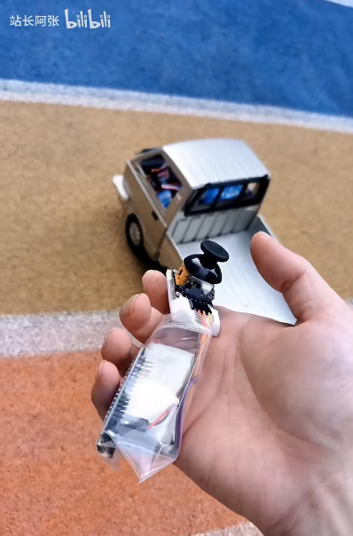
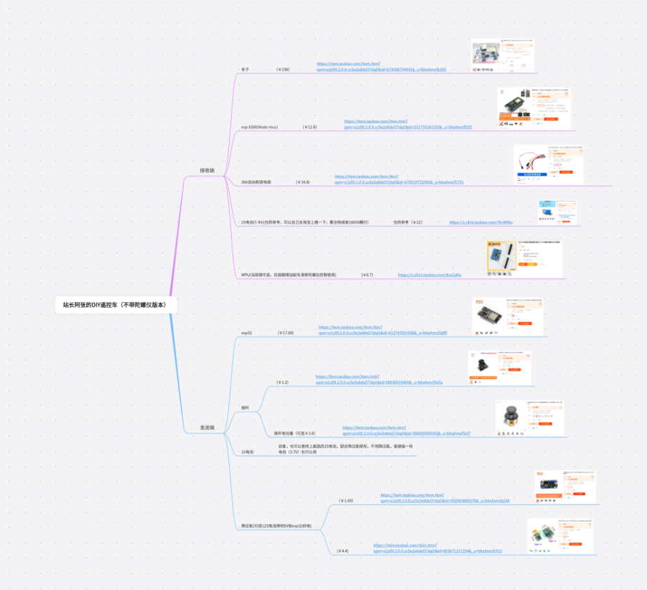

跟清逸折腾硬件之第一版本 esp32控+esp8266接收端 （UDP协议，Arduino IDE）

发布于
第一个版本，使用esp8266创建一个wifi热点，使用esp32连接esp8266的wifi热点，esp32作为遥控端，读取摇杆中的电位器信号，通过UDP发送给esp8266端监听的UDP端口。esp8266接收到udp包，转换成pwm控制信号，分别控制舵机和电调控制小车。
记得关注我

物料清单

视频地址
说明视频地址
https://www.bilibili.com/video/BV1Tx4y1N7Uz/
接线视频地址
https://www.bilibili.com/video/BV1MM4y1r7jm/
开源代码
接收端 （ESP8266，NodeMCU）
#include <ESP8266WiFi.h>
#include <WiFiClient.h>
#include <WiFiUdp.h>
#include <stdio.h>
#include <Servo.h>
#ifndef APSSID
#define APSSID "xiaocheche" // 接收机，自动创建热点，wifi 名称
#define APPSK "xiaoxiaoche" // wifi密码
#endif
/* Set these to your desired credentials. */
const char *ssid = APSSID;
const char *password = APPSK;
unsigned int localPort = 8888; // local port to listen on
// buffers for receiving and sending data
char packetBuffer[UDP_TX_PACKET_MAX_SIZE + 1]; // buffer to hold incoming packet,
WiFiUDP Udp;
bool ledShow = false;
int sendMax = 1024;
int sendHaf = sendMax / 2;
int chanel1 = sendHaf;
int chanel2 = sendHaf;
int lastServo1Value = sendHaf;
int lastServo2Value = sendHaf;
Servo myservo1;
Servo myservo1Haf;
Servo myservo2;
Servo myservo2Haf;
unsigned long timeNow = 0;
unsigned long lastDataTickTime = 0;
void setup() {
pinMode(LED_BUILTIN, OUTPUT); // Initialize the LED_BUILTIN pin as an output
digitalWrite(LED_BUILTIN, LOW);
myservo1.attach(5); // GPIO5 D1 动力电机控制信号全强度，动力会很猛
myservo1Haf.attach(4); // GPIO4 D2 动力电机控制信号一半强度，动力会可控一些
myservo2.attach(12); // D6 方向舵机信号全强度， 容易侧翻
myservo2Haf.attach(13); // D7 方向舵机信号一半强度，防止转弯过度
// GPIO14 D5
// GPIO12 D6
// GPIO13 D7
// GPIO15 D8
Serial.begin(9600);
Serial.println();
Serial.print("Configuring access point...");
WiFi.softAP(ssid, password);
IPAddress myIP = WiFi.softAPIP();
Serial.print("AP IP address: ");
Serial.println(myIP);
Udp.begin(localPort);
}
void updateServo() {
if (chanel1 > sendMax) {
chanel1 = sendMax;
}
if (chanel2 > sendMax) chanel2 = sendMax;
if (lastServo1Value != chanel1) {
myservo1.write(int(float(chanel1) / sendMax * 180));
myservo1Haf.write(int(float(chanel1) / sendMax * 90) + 45);
lastServo1Value = chanel1;
}
if (lastServo2Value != chanel2) {
myservo2.write(180 - int(float(chanel2) / sendMax * 180));
myservo2Haf.write(90 - int(float(chanel2) / sendMax * 90) + 45);
lastServo2Value = chanel2;
}
}
void loop() {
timeNow = millis();
// if there's data available, read a packet
int packetSize = Udp.parsePacket();
if (packetSize) {
int n = Udp.read(packetBuffer, UDP_TX_PACKET_MAX_SIZE);
packetBuffer[n] = 0;
sscanf(packetBuffer, "chanelData:%d:%d", &chanel1, &chanel2);
lastDataTickTime = timeNow;
updateServo();
// Serial.printf("\t chanel1: %d \t chanel2: %d \t \n", chanel1, chanel2);
if (ledShow) {
digitalWrite(LED_BUILTIN, LOW);
ledShow = false;
} else {
digitalWrite(LED_BUILTIN, HIGH);
ledShow = true;
}
}
// 超过1秒没收到信号，就把设备归中
if (timeNow - lastDataTickTime > 1000) {
chanel1 = sendHaf;
chanel2 = sendHaf;
updateServo();
}
delay(1);
}
发送端 （ESP32）
#include <WiFi.h>
#include <WiFiUdp.h>
// WiFi network name and password:
const char * networkName = "xiaocheche";
const char * networkPswd = "xiaoxiaoche";
const char * udpAddress = "192.168.4.1";
const int udpPort = 8888;
//Are we currently connected?
boolean connected = false;
//The udp library class
WiFiUDP udp;
int LED_BUILTIN = 2;
bool ledShow = false;
int baseX = 0;
int baseY = 0;
// 100的间隙
int gap = 100;
void setup() {
Serial.begin(9600);
baseX = analogRead(35); // X 读取35针脚
baseY = analogRead(34); // Y 读取34针脚
//Connect to the WiFi network
connectToWiFi(networkName, networkPswd);
pinMode(LED_BUILTIN, OUTPUT); // Initialize the LED_BUILTIN pin as an output
}
int MAX = 4096;
int vx = 0;
int vy = 0;
int sendMax = 1024;
int sendHaf = sendMax / 2;
// 输出到频道值 0 - 1024；
int sendx = 0;
int sendy = 0;
// the loop function runs over and over again forever
void loop() {
vx = analogRead(35);
vy = analogRead(34);
sendx = sendHaf;
sendy = sendHaf;
if (vx > baseX) {
if (vx > baseX + gap) {
sendx = int(float(vx - baseX - gap) / (MAX - baseX - gap) * sendHaf) + sendHaf;
}
} else {
if (vx < baseX - gap) {
sendx = int(float(vx) / float(baseX - gap) * sendHaf);
}
}
if (vy > baseY) {
if (vy > baseY + gap) {
sendy = int(float(vy - baseY - gap) / (MAX - baseY - gap) * sendHaf) + sendHaf;
}
} else {
if (vy < baseY - gap) {
sendy = int(float(vy) / float(baseY - gap) * sendHaf);
}
}
if(connected){
//Send a packet
udp.beginPacket(udpAddress,udpPort);
// 下面这行注释掉，会更快
Serial.printf("\t vx: %d \t vy: %d \t sy: %d \t sy: %d \n", vx, vy, sendx, sendy);
udp.printf("chanelData:%d:%d", sendx, sendy);
udp.endPacket();
}
if (ledShow) {
digitalWrite(LED_BUILTIN, LOW);
ledShow = false;
} else {
digitalWrite(LED_BUILTIN, HIGH);
ledShow = true;
}
delay(10); // 可去掉
}
void connectToWiFi(const char * ssid, const char * pwd){
Serial.println("Connecting to WiFi network: " + String(ssid));
// delete old config
WiFi.disconnect(true);
//register event handler
WiFi.onEvent(WiFiEvent);
//Initiate connection
WiFi.begin(ssid, pwd);
Serial.println("Waiting for WIFI connection...");
}
//wifi event handler
void WiFiEvent(WiFiEvent_t event){
switch(event) {
case SYSTEM_EVENT_STA_GOT_IP:
//When connected set
Serial.print("WiFi connected! IP address: ");
Serial.println(WiFi.localIP());
//initializes the UDP state
//This initializes the transfer buffer
udp.begin(WiFi.localIP(),udpPort);
connected = true;
break;
case SYSTEM_EVENT_STA_DISCONNECTED:
Serial.println("WiFi lost connection");
connected = false;
break;
default: break;
}
}
代码烧写方式
参考资料：
https://blog.csdn.net/qq\_45836948/article/details/117548024
Arduino + ESP8266
https://blog.csdn.net/weixin\_49861340/article/details/123792561
Arduino + ESP32
https://zhuanlan.zhihu.com/p/473218064
建议在B站上面搜索相关教程
评论
或 匿名发表评论